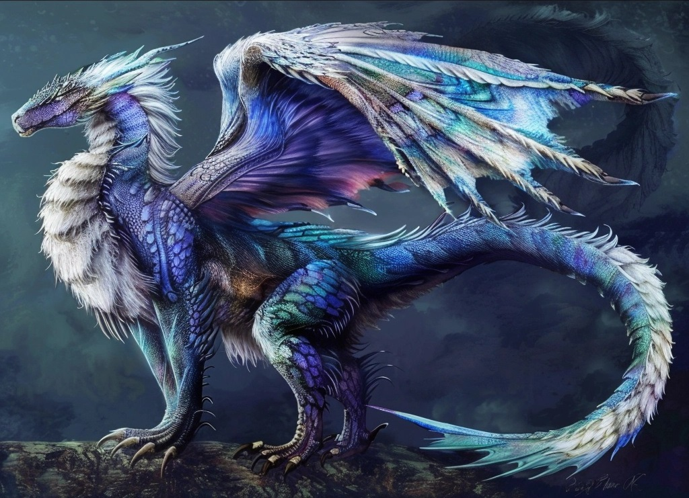

A História de Vardinos
Nas brumas do tempo, na escuridão dos oceanos, onde a luz do sol mal consegue penetrar, Vardinos emergiu. Suas escamas translucidas refletem todas as cores do mar, e seu canto pode acalmar ou chamar as tempestades mais furiosas.
O Deus Dragão Vardinos trouxe a chuva para apagar as chamas que devastavam o mundo, com o gotejar das chuvas nas cinzas das arvores eternas, as raças de elfos surgiram, seguindo o aspecto Feérico de seu progenitor.
Lendas do dragão de água
O Nascimento das Marés
Contam os antigos marinheiros que o primeiro movimento das ondas ocorreu quando Vardinos abriu seus olhos pela primeira vez. Cada piscar desde então cria as marés, e seu ritmo respiratório dita o fluxo e refluxo dos oceanos.
O dragão prega que a agua pode trazer a calmaria, mas tambem a tempestade, Vardinos é o Deus Dragão menos sociavel dos 4, evitando o maximo de contato possivel com outros seres.
O Canto das Sereias
As sereias, outra criação de Vardinos, vieram a existencia ao ouvir Vardinos agradecer a solidão das profundezas com uma canção, surgindo da propria agua e escuridão, utilizam seu canto feérico para se comunicar.
Vardinos então, arrasado por ter sua paz destruida com uma nova civilização, pediu para Atriox criasse uma montanha tão alta que ninguem conseguiria chegar até ele, então, Atriox criou mais uma montanha no norte montanhoso do continente de Ruddliah, uma montanha que, posteriormente seria chamada de monte olimpo pelos mortais.
O Tesouro dos Abismos
Nos contos dos Feericos primordiais, Vardinos guarda os segredos de civilizações perdidas em seu palácio no topo do monte olimpo. Aqueles que conseguem chegar até Vardinos são concedidos um desejo em troca de sair de perto dele o mais rapido possivel, pois o Deus Dragão reconhece o esforço que é para escalar tamanha montanha, Vardinos já concedeu tantos desejos, que sua memoria pelos mortais que passaram por lá desapareceram, como o sal é dissolvido no mar.
Vardinos ama a humanidade, mas ao mesmo tempo odeia que cheguem até ele, os Feéricos primordiais sabem disso, e, vivem com ele em seu palacio, que eles levantaram para ser a casa de vardinos no topo do monte olimpo, aprenderam a se comunicar telepaticamente, assim, suas vozes não atrapalhariam o sono do deus dragão, que se mantem solitario repousando no topo de sua camara no lugar mais distante que a civilização um dia ja chegou.
A Beleza de Vardinos
